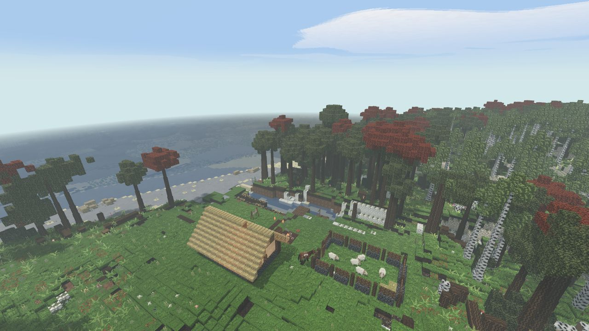

Świat i mapa
Świat to cała planeta, jeden blok to jeden metr. Czytasz go tak, jak czytałbyś prawdziwy teren.
Planeta
Jedno ziarno to jedna planeta. W formularzu nowego świata wybierasz jej wielkość, od rozmiaru Ziemi (40 075 km wokół równika, około 108 dni pieszo) aż po małą planetę, którą obejdziesz w mniej więcej cztery godziny. Drzewa, rzeki, wzgórza i jeziora mają pełny rozmiar na każdej planecie. Kurczą się tylko pasy klimatyczne i kontynenty.
Miejsce lądowania wybierasz z orbity (zobacz Pierwsze kroki). Panel podaje kontynent i kraj, mówi, jak jest ciepło i wilgotno, jak daleko do równika i co leży w zasięgu dnia drogi.
- Idź na wschód, a wrócisz od zachodu. Planeta zawija się w długości geograficznej. Nie ma ściany ani szwu.
- Na północy i południu są bieguny: za tajgą zaczyna się tundra, a potem lądolód bez drzew i bez ognia. Zabija tych, którzy przyjdą nieprzygotowani.
- Im dalej od oceanu, tym suszej. Step i pustynia leżą głęboko w głębi lądu, a wybrzeże jest zawsze bardziej zielone niż to, co za nim. Mniej więcej 20–30° od równika leżą wielkie pustynie.
- Kraje mają setki kilometrów szerokości. Zmiana kraju to dni podróży, a nie godzina.
W następnej aktualizacji: ekran lądowania dostanie przycisk w lewym dolnym rogu globusa, który przełącza cztery rysunki tej samej planety: piksele, gładki oświetlony globus, sześciokątne pola (kliknij pole, żeby w nim wylądować) i starą mapę na pergaminie.
Ukształtowanie terenu
- Wzgórza: okrągłe trawiaste wzgórza wysokie na dwadzieścia do trzydziestu bloków od dołu do szczytu, lasy w kępach, strumienie w zagłębieniach. To kraina miedzi.
- Step: płaska trawa po horyzont, prawie bez drzew, więcej dzikiego zboża niż gdziekolwiek. Weź ze sobą drewno i wodę.
- Las, brzezina, tajga i spalony martwy las (z popiołem między pniami).
- Bagno i torfowisko: torf, sitowie, rdzawe kamienie.
- Sawanna i pustynia w gorących pasach. Plaże z palmami na ciepłych wybrzeżach.
- Góry: grzbiety w pasach szerokich na około sto kilometrów, sto do stu sześćdziesięciu bloków nad poziomem morza, ze śniegiem na szczytach.
Rzeki są trzech rozmiarów: strumienie szerokie na krok albo dwa, rzeki szerokie na około dwanaście bloków i wielkie rzeki szerokie na około sto dziesięć, których nie przejdziesz w bród. Rzeki płyną do morza. Idź z biegiem rzeki, a dojdziesz do wybrzeża.

Znaki w krajobrazie
Świat pokazuje ci, dokąd iść, a żaden z tych znaków nie wypisuje niczego na ekranie:
- Jasny pas wzdłuż wody: żwir naniesiony przez rzekę albo jezioro. Mniej więcej co trzeci kamyk to tam krzemień.
- Wydeptane ścieżki zbiegające się przy stawie: wodopój. Nic na nich nie rośnie, ale leżą tam kamienie.
- Gruz i kamyki usypane na zboczu: wejście do jaskini.
- Zielonkawa plama na stromym zboczu: wychodnia miedzi. Rzadka. Znaczy, że pod tym wzgórzem jest miedź.
- Skała na grzbiecie (ostaniec): goły kamień sterczący nad trawą. Dobre miejsce, żeby się rozejrzeć.
- Płaski stopień nad rzeką: taras, suchy płaski grunt nad terenem zalewowym. Miejsce do budowy.
- Dym na horyzoncie: czyjś ogień. Otwarty ogień widać z około sześćdziesięciu bloków, najlepiej ze szczytu wzgórza.
- Podcięte brzegi po zewnętrznej stronie zakoli rzek pokazują warstwy: darń, ziemia, glina, kamień.
Pod ziemią
Pod skałą właściwą dla danego kraju wszędzie leżą te same warstwy, każda na swojej głębokości: szary kamień, potem wapień, potem piaskowiec, a na samym dole granit. Tam, gdzie piaskowiec styka się z wapieniem, często leży cienka warstwa gliny. Głębokość to twardość: wapień ustąpi krzemieniowi, granit tylko miedzi. Stalaktyty rosną tylko w skałach, które rozpuszcza woda (wapień, kreda), więc sufit pełen kolców mówi ci, gdzie jesteś. Nie skacz na stalagmity. Woda w podziemnych jeziorach przesączyła się przez kamień i można ją bezpiecznie pić.
Pory roku i pogoda
Doba to 30 minut, rok to 40 dni, po dziesięć na porę roku. Zima jest tym zimniejsza, im dalej od równika: na równiku to chłodny tydzień, na sześćdziesiątym stopniu siarczysty mróz. Gdy pada śnieg, osiada na otwartym terenie, a w cieple topnieje. Burze ciskają piorunami. Późne lato może przynieść suszę. Księżyc przechodzi przez swoje fazy w ciągu ośmiu nocy. Przy pełni możesz chodzić bez pochodni, w bezksiężycową noc nie.
Odnajdywanie drogi
Mapa to rzecz, którą nosisz
Nie ma minimapy ani strony z mapą, dopóki jej nie zrobisz. Mapa: 3 skóry garbowane + 1 węgiel drzewny ręcznie (2 skóry garbowane + 1 węgiel drzewny na stole rymarskim). M ją otwiera, ale tylko wtedy, gdy mapa jest w torbie. Działa też trzymanie jej w ręce i prawy klik. Bez mapy M nic nie robi.
Mapa wypełnia się tylko tam, gdzie chodzisz z nią w torbie, pasem szerokim na około 48 bloków z każdej strony twojej drogi, rysowana jakby ręcznie: wybrzeża tuszem, woda kreskowaniem, góry jako małe szczyty, las jako korony drzew, twoja trasa jako czerwona kropkowana linia. Mapa zrobiona dziś to mapa jutrzejszej drogi, więc zrób ją przed długą wyprawą.
Na mapie nie ma znacznika „tu jesteś”. Są na niej twoje kopce i zaciosy, a gdy stoisz blisko któregoś, pojawia się strzałka pokazująca, w którą stronę patrzysz.
Niebo
Spójrz na słońce, a linijka u góry ekranu powie coś w rodzaju według słońca: północ po lewej. Nocą to samo robi księżyc, a w pogodne bezksiężycowe noce gwiazdy: gwiazda polarna stoi dokładnie na północy. Pod chmurami podpowiedzi nie ma. Mech rośnie na północnej stronie kamieni i pni.
Kopce i zaciosy
- Kopiec z kamieni: 6 kamyków ręcznie. Postaw go tam, gdzie chcesz zapamiętać miejsce, i nadaj mu nazwę. Trafi na mapę tylko wtedy, gdy w chwili stawiania mapa była w torbie.
- Zacios: weź nóż, przytrzymaj Shift i kliknij prawym rosnący pień. Zacios zostaje tak długo, jak drzewo.
Kompas
Epoka żelaza. Kopanie rudy żelaza czasem daje magnetyt. Kompas wodny to żelazne gwoździe + magnetyt + garść liści + miska + dzban wody, ręcznie. Magnetyt i dzban wracają. Trzymany w ręce pokazuje północ przy każdej pogodzie, nawet pod ziemią.